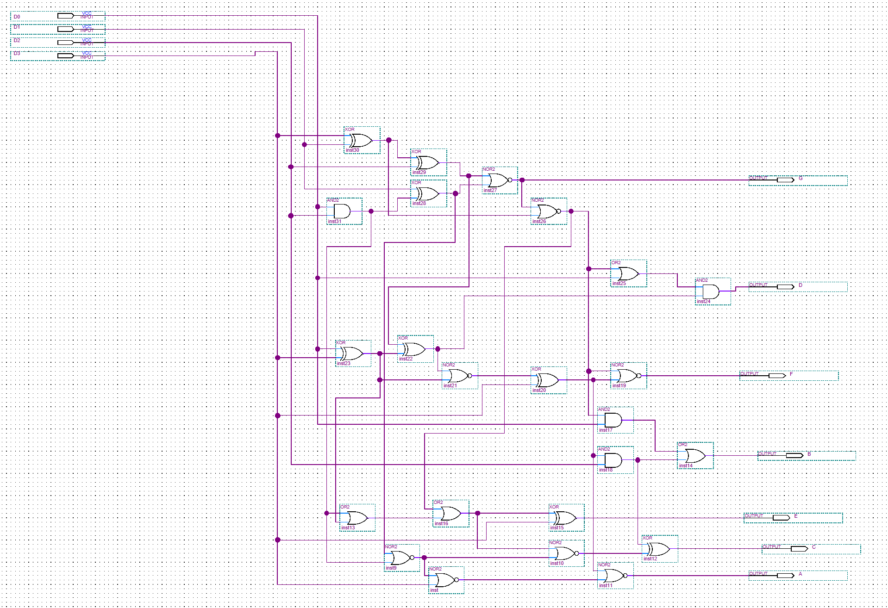
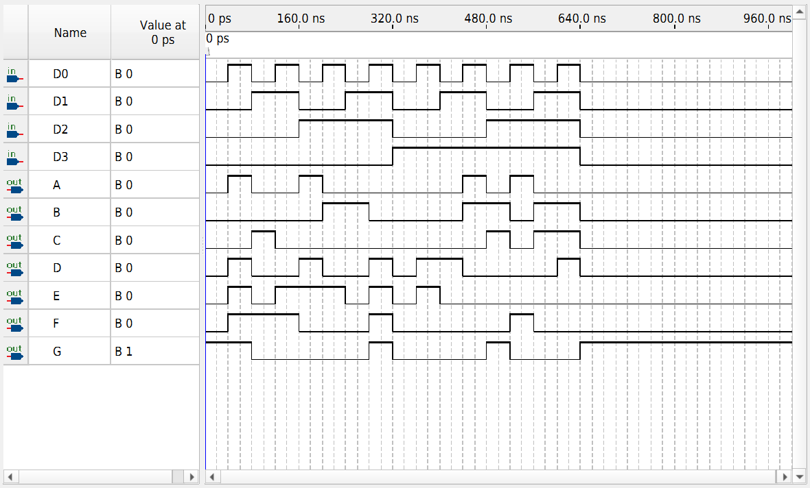

FPGA / COMBINATIONAL LOGIC
4-Bit Hexadecimal-to-Seven-Segment Decoder
A combinational logic circuit that converts a 4-bit hexadecimal input into seven active-low control signals for a seven-segment display.
OVERVIEW
Hexadecimal Display Decoding
This project implements a 4-bit hexadecimal-to-seven-segment decoder using combinational logic in Intel/Altera Quartus Prime.
The decoder accepts a 4-bit input from `0000` through `1111`, corresponding to hexadecimal values `0x0` through `0xF`, and generates the segment pattern required to display the corresponding hexadecimal digit.
The recovered coursework project was reorganized, recompiled in Quartus Prime Lite 25.1, and functionally verified again for portfolio use.
DESIGN
Combinational Decoder Logic
The decoder is constructed from interconnected combinational logic gates that map the four input bits to the seven segment control outputs.
Inputs `D3:D0` represent the hexadecimal value, while outputs `A` through `G` control the individual display segments.
The outputs are active-low, so an output value of `0` activates the corresponding segment.

SIGNALS
Inputs & Outputs
| Signal | Purpose |
|---|---|
| D3:D0 | 4-bit hexadecimal input |
| A | Segment A control |
| B | Segment B control |
| C | Segment C control |
| D | Segment D control |
| E | Segment E control |
| F | Segment F control |
| G | Segment G control |
VERIFICATION
Exhaustive Functional Simulation
A new Quartus Simulation Waveform File was created to functionally verify the recovered design.
The testbench cycles through all 16 possible 4-bit input combinations from `0000` through `1111`, corresponding to hexadecimal values `0` through `F`.
Because every possible input combination was exercised, the combinational decoder was exhaustively functionally verified.

RESULTS
Verified Operation
TOOLS